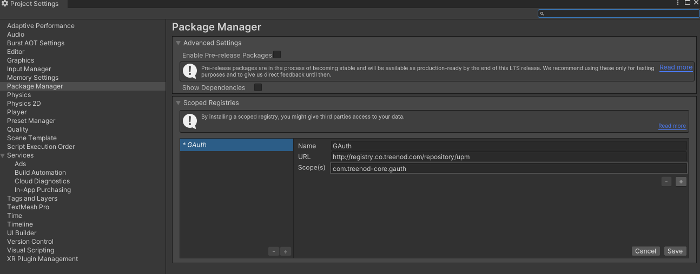
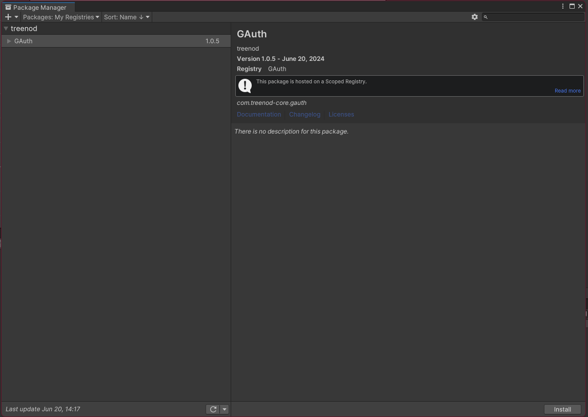
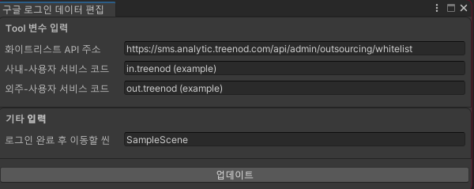
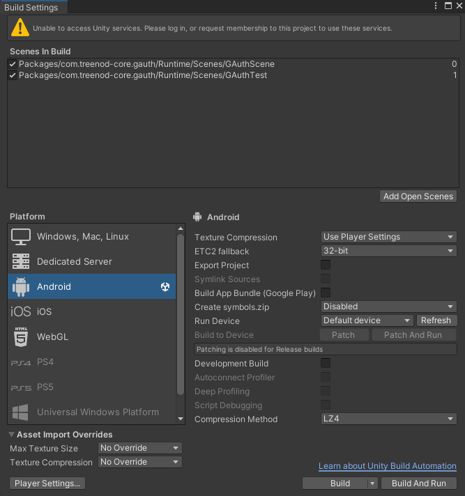
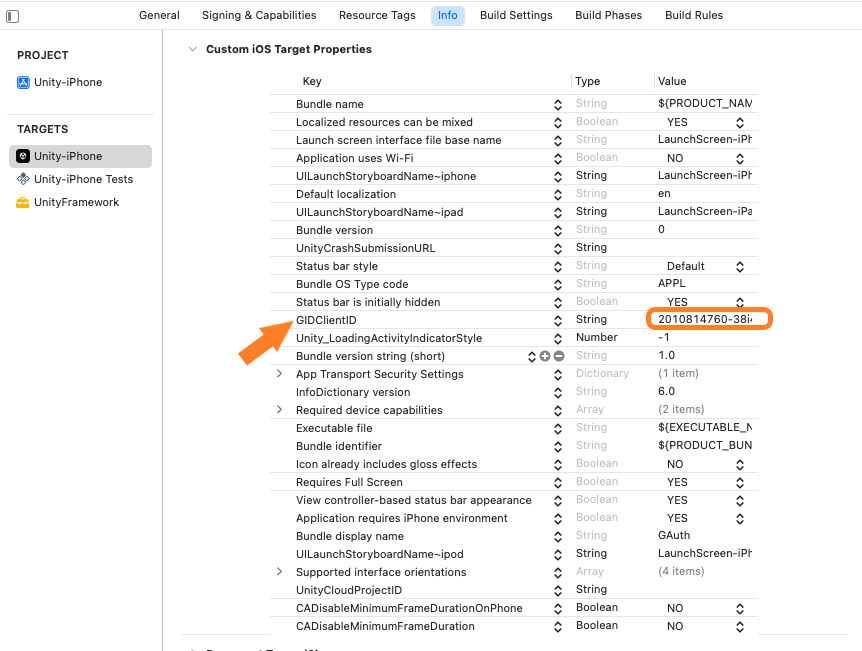
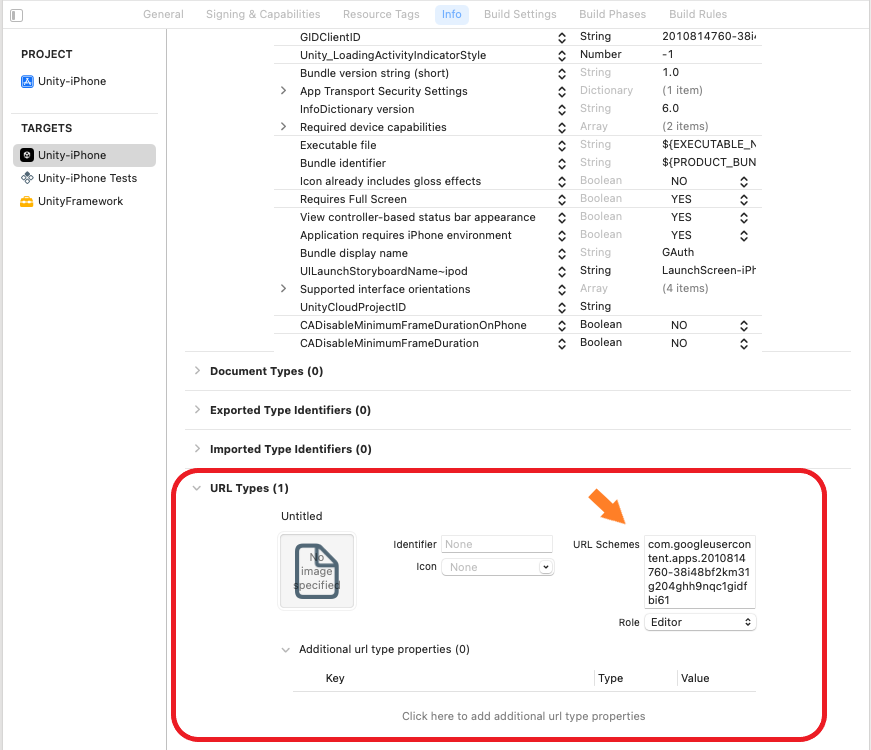
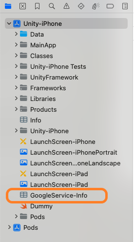

GAuth (Google SignIn)
💡 소개
google-signin-unity 플러그인을 사용하여 구글 로그인 기능 및 사용자 이메일 정보 제공
외주 업체 화이트 리스트 API 호출 후, 화이트 리스트 여부에 따라 서비스 코드 제공
🛠️ 설치
🎁 패키지 매니저를 통한 설치
유니티 에디터 → Edit → ProjectSettings → Package Manager

Name, URL, Scope(s) 값을 입력하고 Save 버튼을 클릭합니다.
유니티 에디터 → Window → Package Manager → Packages:My Registries → GAuth

Install 버튼을 클릭합니다.
💼 준비물
1. 서비스 코드(from. 데이터 분석팀) 및 데이터 설정
SMS 관련 API 호출에 사용되는 서비스 코드를 전달 받아 유니티 에디터에 설정해야 합니다.
유니티 에디터 → Treenod-Core → GAuth → 구글 로그인 데이터 편집

사내/외주 사용자 서비스 코드 입력
구글 로그인이 완료되고 노출되는 Scene 이름 입력 (ex: GAuthTest)
업데이트 버튼을 클릭합니다.
2. Google Cloud console 앱 정보 등록
google-sign-in 플러그인을 사용하기 위해서는 Google Cloud Console에서 프로젝트를 생성하고 OAuth 2.0 클라이언트 ID를 발급 받아야 합니다.
Google Cloud Console에 접속하여 프로젝트를 생성합니다.
생성한 프로젝트에서 API 및 서비스 → 사용자 인증 정보 → 사용자 인증 정보 만들기를 클릭합니다.
OAuth 클라이언트 ID를 선택하고, 애플리케이션 유형을 Android로 선택합니다.
패키지 이름을 입력하고, SHA-1 인증서 지문을 입력합니다.
발급 받은 클라이언트 ID가 저장된 *.json 파일을 다운로드 합니다.
Google Cloud Console에 접속하여 프로젝트를 생성합니다.
생성한 프로젝트에서 API 및 서비스 → 사용자 인증 정보 → 사용자 인증 정보 만들기를 클릭합니다.
OAuth 클라이언트 ID를 선택하고, 애플리케이션 유형을 iOS로 선택합니다.
Bundle ID를 입력하고, 발급 받은 클라이언트 ID가 저장된 *.plist 파일을 다운로드 합니다.
내용을 입력하세요.
3. GoogleSignIn 구성 파일(*.json, *.plist) 추가
google-sign-in 플러그인을 사용하기 위해서는 Google Cloud Console에서 발급 받은 클라이언트 ID가 저장된 파일을 프로젝트에 추가해야 합니다.
Google Cloud Console에 접속하여 클라이언트 ID에 *.json 다운로드
다운로드 받은 *.json 파일명을 google-services.json 변경
google-services.json 파일을 유니티 프로젝트 Assets 폴더 하위에 추가합니다.
Google Cloud Console에 접속하여 클라이언트 ID에 *.plist 다운로드
다운로드 받은 *.plist 파일명을 GoogleService-Info.plist 변경
GoogleService-Info.plist 파일을 유니티 프로젝트 Assets 폴더 하위에 추가합니다.
🔎 사용법
Build Settings 윈도우를 열어 Scenes In Build 영역에 GAuthScene 씬을 추가한다. (GAuthScene 순서는 구글 로그인이 필요한 씬보다 높게 설정되어야 한다)

구글 로그인 완료 후, GAuth.UserEmail / GAuth.ServiceCode 값을 통해 사용자 정보를 확인할 수 있다. (해당 값을 필요한 곳에 사용하면 된다)
빌드 후 확인할 내용
xcode 프로젝트 → Info → Custom iOS Target Properties → GIDClientID 확인

xcode 프로젝트 → Info → URL Types → URL Schemes 확인

xcode 프로젝트 → Unity-iPhone → GoogleService-Info.plist 확인
